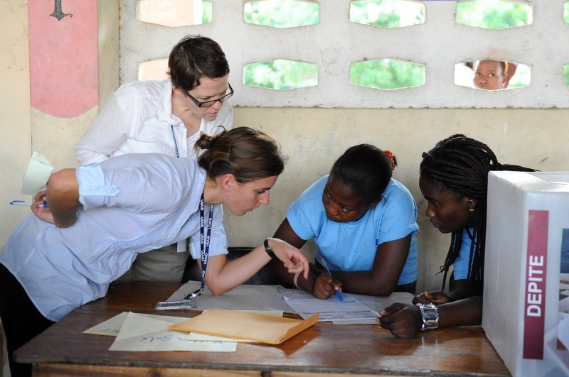

![NTK]()

Darline Graham Went From Safe Seat to Coin Flip in Three Months
Sen. Darline Graham, 62, was appointed to her late brother's seat after his death in July, and Republicans assumed the Graham name would do the rest. The New York Times/Siena poll of 707 voters says otherwise: she and Democrat Annie Andrews each sit at 48%, in a state Donald Trump carried by nearly 18 points in 2024 (The New York Times). South Carolina has not sent a Democrat to the Senate since Fritz Hollings won in 1998 (The Daily Beast).
The crosstabs explain the slide. Independents break 57% to 37% for Andrews, and 7% of Republicans say they are defecting (Mediaite). Graham's one advantage is name recognition, since nearly a quarter of respondents had no opinion of Andrews or had never heard of her.
The defections have names. Former Govs. David Beasley, a Republican, and Jim Hodges, a Democrat who beat him in 1998, recorded a joint ad for Andrews (The Daily Beast). Warren Norman, son of Rep. Ralph Norman, who lost the runoff to Graham, wrote that he is leaning toward Andrews (The Daily Beast). His father says he will still vote for Graham. Meanwhile, a Post and Courier columnist noted that Trump is making his second trip in a week to Rock Hill, to areas where Graham ran poorly in the primary (Post and Courier). The White House says that is not damage control.
The Campaign Is Also Absorbing a Documentary and a Removed Heckler
The trouble is not only polling. Last week Swamp Watch Studios and The Young Turks released a 33-minute documentary in which male sex workers say Lindsey Graham hired them. One, identified as Kelvin, says he was 17 in 2001 (The Daily Beast). Those are the accusers' claims; the documentary's makers and the senator's family have not been tested in court.
On Wednesday in Greenville, commentator Patrick Howley pressed Darline Graham about the film at a "coffee and conversation" event and was blocked, then escorted out. The host club called him "an unruly attendee." Graham did not answer, and her office did not respond to a request for comment. Her brother spent three decades opposing same-sex marriage and open military service for gay people, which is the contrast the documentary was built to exploit.
Federal Monitors Arrive in a County That Has Already Seen Them Once
That leaves Election Day itself. The Justice Department's Civil Rights Division will place monitors in Charleston County on Nov. 3, with up to 1,000 monitors deployed nationwide (Post and Courier). Isaac Cramer, the county's elections director, said DOJ told him the choice of Charleston came from higher-ups, and he expects four or five two-person teams. The same county was the only one monitored in the August runoff between Graham and Norman.
The ACLU of South Carolina heard little to no complaints about that August presence. Spokesman Paul Bowers said voter intimidation is still the group's top worry, and that "the way the Justice Department has been weaponized as of late should give people pause." DOJ says monitors must not interfere and will report possible federal-law violations for review after the vote.
The backdrop is not neutral. The Justice Department sued 23 states and D.C. over unredacted voter rolls, and judges dismissed the California and Oregon suits in January (Wikipedia). One county was watched when Graham was winning a primary. It is watched again now that she may not win the general.
The calendar leaves Graham and Andrews six days, and each side has a different thing to do with them.
Trump Will Be in Rock Hill, and the Rally Will Say More Than the Speech
Trump's return to Rock Hill is the clearest sign of how the Graham campaign reads its own numbers, and the most likely outcome is a rally that does little for Graham and a lot for the story about her. Presidents spend days on safe seats only when their own pollsters are alarmed. The White House insists otherwise, but Rock Hill sits in the part of the state where Graham underperformed in the primary, so the trip is aimed at the voters she is losing. A president who has already used a transgender slur against Andrews has no incentive to turn gentle in the final week, and the likeliest rally is a loud one that gives Andrews a clip to run against it.
That is the real risk for Graham. The 7% of Republicans leaning away from her are not persuaded by being told the race is fine. They are persuaded or lost by the reminder of why they hesitated, and the "write in Ralph" movement among Ralph Norman's supporters gives them somewhere to put the protest. Even a modest write-in drift costs Graham votes in a race that is currently separated by less than a single percentage point. Expect the Graham campaign to answer by spending its last days on turnout in the same counties Trump is visiting, because that is where the arithmetic is worst.
The Documentary Becomes a Turnout Problem Instead of a Persuasion Problem
The Greenville incident is a small version of what the final week will look like for Graham. She cannot answer questions about the film without either defending her brother or breaking with him, and she has chosen silence, which works until a question gets asked on a stage that does not have a friendly host. Howley's clip is cheap to make, so more of them are coming at every public stop. Each one lets Andrews' allies talk about Lindsey Graham's record on gay rights without Andrews saying a word about it.
The accusations remain unproven, and the film's makers have not been tested in court. That matters for what happens next. Because nothing can be settled in six days, the film's value to Democrats is the unanswered question, repeated until Nov. 3. Its cost to Graham falls hardest among the evangelical and older voters she most needs to turn out, who are the least likely to say aloud why they stayed home.
If the Margin Is Under One Point, Charleston County Becomes the Argument
The structural bet is on what happens after the polls close. A race this close, with federal monitors assigned to a single county on instruction from agency leadership, sets up a dispute over the count before the count is finished. The most likely sequence is that Charleston, a county Democrats need to run up their margin in, produces the first complaints: a long line, a rejected ballot, a monitor who stands too close. DOJ has said it will review concerns after Election Day, which means any finding would arrive well after a result is certified, and any claim of misconduct would arrive in the first 24 hours.
Isaac Cramer's stated goal of running an ordinary election is realistic, since his office has already run six this year. What he cannot control is how a one-point result gets described. If Andrews wins narrowly, expect Republicans to cite the monitors' reports as grounds for challenge. If Graham wins narrowly, expect Democrats to cite the same monitors as a pressure campaign on voters in a county they needed. Either way, a handful of two-person teams in plain clothes end up carrying an argument far larger than their job.
Three doors opened this week, and each one leads into a room the previous one makes visible.
Republican Defectors Now Have a Respectable Place to Land
Until this week, a South Carolina Republican uneasy about Darline Graham had two options: swallow it or stay home. Two things in the room now change that. Former Govs. David Beasley and Jim Hodges recorded a joint ad, and Warren Norman wrote that Andrews could be replaced in six years if she disappoints, while Graham might hold the seat for 24 or more (The Daily Beast). Beasley also wrote in the Post and Courier that this is "not the party" he knew. Put together, those pieces hand a conservative a script: voting Democrat once is a temporary correction, not a conversion. That script did not exist when Ralph Norman conceded in August. It is the first door, and it is open now.
A Bipartisan Coalition Could Outlast the Race
The second room only becomes visible if the first door works. If Andrews wins on a ticket that includes Republican defectors, she owes her seat to people whose stated reason was ending the "political fighting," as Beasley put it. Hodges beat Beasley in 1998, so the pair have already shown that two rivals can share a stage without either surrendering. A Senate freshman with that debt has a rare opening: to be the Democrat whose first votes are judged by conservatives who lent her their ballots. Norman's own condition, that she must "stand up to her own party," becomes the test. A narrow win could produce a senator with more cross-party accountability than most, and a model for how South Carolina Republicans punish their own nominees without handing the state over permanently. This is the generative door in the section, and it exists only if the defection is large enough to matter.
Charleston's Monitors Could Become the Count's Referee
The third door opens onto a worse hallway, and it depends on the first two. If defectors and write-ins push the margin below the point where anyone trusts a number, the only federal presence on the ground in South Carolina is the pair of two-person teams the Justice Department placed in Charleston County. The department sued 23 states and D.C. over voter rolls and lost in California and Oregon (Wikipedia), so its records are already part of an argument about elections. The ACLU says its top worry is intimidation, and DOJ says it will review concerns only after the vote. In a recount-sized race, those teams stop being observers and become the nearest thing to an official account of what happened at the polls. Isaac Cramer's office, which has run six elections this year, would be asked to reconcile its records against a federal agency's. The adjacent possible here is a fight over whose notes count, and it is reachable only because a close result, a single targeted county, and a politically contested agency now sit in the same room.
The accusations about Lindsey Graham are unproven. The claims being built on top of them are a different matter.
"The Documentary Proves Lindsey Graham Hired a Minor"
Patrick Howley says it as settled fact. His X post after Wednesday's removal from the Greenville event called the accusers "Lindsey's gay escort accusers, one of whom was 17," and his on-camera shout, "She refuses to answer the question about the abuse of young men," treats the film's central allegation as a finding. It is a claim made by one man, Kelvin, in a 33-minute production from Swamp Watch Studios and The Young Turks (The Daily Beast).
The pull of the claim is easy to see. Voters have watched powerful men get away with things for decades, and a story about a politician who preached against gay Americans while allegedly doing this in private fits a suspicion many people already hold. The film arrived with a ready audience.
The benefit is also easy to see. Howley bills himself as a "citizen journalist exposing dark secrets," and the clip of his removal does more for his brand than any answer from Darline Graham could. The Young Turks get a week of attention. Annie Andrews' allies get a topic they never have to raise themselves.
Now the reality. Lindsey Graham died in July, so no court can test the allegation and no defendant can answer it. Kelvin's account, that Graham asked him to say he was 18 as a form of cover, is a recollection of a 2001 conversation with no recording described anywhere in the coverage. Nothing in the reporting shows an investigation, a complaint, or corroboration beyond the film's own interviews. "Alleged" is the accurate word, and Howley dropped it.
The second distortion is quieter: that a sister can be held to account for her brother's private conduct. Darline Graham is answerable for her own record, and that record is already a long one. She admitted that "national security is not my thing." She donated to Katrina Shealy while calling herself "100 percent pro-life." Voters can judge her on those facts, which are documented, rather than on an accusation against a dead man that she had no part in.
The most dangerous part of this lie is its structure. An unfalsifiable charge, repeated until the target's silence counts as confession, works against anyone, in either party. Howley demands that Graham answer for a claim no one can prove or disprove, then reads her refusal as an answer. The tactic works the same way against someone the reader likes.
Call it a verdict before a trial. Howley can ask the question, and the film's makers can stand behind their interviews. What neither can do is announce a conclusion the evidence has not reached.